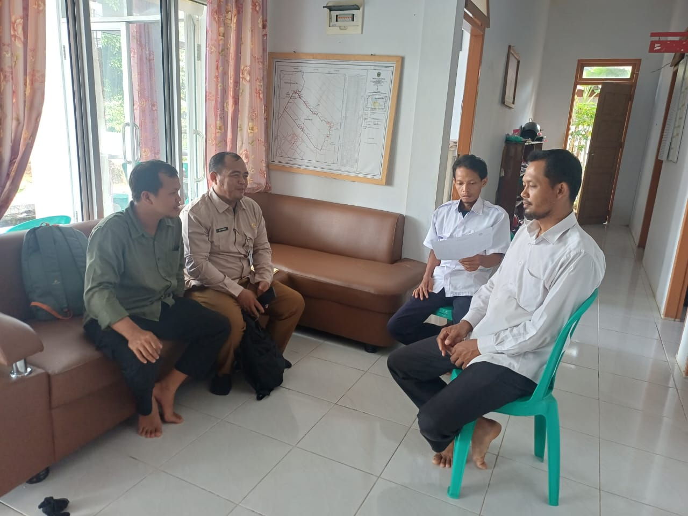

Komisi Pemilihan Umum (KPU) Kabupaten Tebo telah melaksanakan kegiatan Pencocokan dan Penelitian Terbatas (Coktas) sebagai bagian dari pelaksanaan Pemutakhiran Data Pemilih Berkelanjutan (PDBP). Kegiatan ini bertujuan untuk memastikan data pemilih tetap akurat, mutakhir, dan sesuai dengan kondisi terkini di lapangan.
Pelaksanaan Coktas dilakukan terhadap data pemilih yang memerlukan verifikasi dan klarifikasi berdasarkan hasil sinkronisasi data serta informasi dari berbagai sumber yang dapat dipertanggungjawabkan. Verifikasi dilakukan untuk memastikan status dan keberadaan pemilih sehingga data yang digunakan oleh KPU Kabupaten Tebo selalu terjaga kualitasnya.
Dalam pelaksanaannya, jajaran KPU Kabupaten Tebo melakukan pengecekan langsung ke lapangan dan berkoordinasi dengan pemerintah desa, kelurahan, serta pihak terkait guna memperoleh data yang valid. Kegiatan ini menjadi bagian penting dalam menjaga akurasi daftar pemilih secara berkelanjutan.
Data pemilih yang akurat merupakan salah satu fondasi utama dalam penyelenggaraan pemilu dan pemilihan yang demokratis. Oleh karena itu, setiap perubahan data kependudukan perlu diverifikasi agar hak pilih masyarakat dapat terjamin dan terakomodasi dengan baik.
KPU Kabupaten Tebo mengucapkan terima kasih kepada seluruh pihak yang telah mendukung pelaksanaan kegiatan ini, baik pemerintah daerah, pemerintah desa, maupun masyarakat yang telah memberikan informasi secara aktif dalam proses pemutakhiran data pemilih.
Hasil pelaksanaan Coktas akan menjadi bahan pembaruan data dalam proses Pemutakhiran Data Pemilih Berkelanjutan (PDBP). Melalui kegiatan ini, KPU Kabupaten Tebo terus berkomitmen untuk menghadirkan data pemilih yang akurat, mutakhir, dan berkelanjutan guna mendukung pelayanan kepemiluan yang berkualitas.